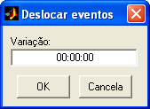
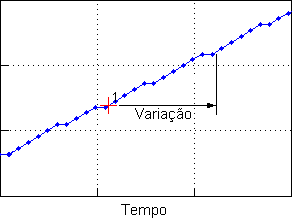

| Menu Ferramentas |
|
Essa operação
permite deslocar os
eventos no tempo, ou seja, aplicar um offset
em todos os tempos dos eventos cadastrados.
Clique em
“Ferramentas ► Gerenciamento de eventos
... ► Deslocar
eventos no tempo”.

Insira o offset em qualquer
formato
de tempo
reconhecido pelo R_DAT.
A variação de
tempo é o valor a
ser somado aos tempos originais dos eventos,
conforme ilustrado abaixo:

Ao clicar “OK”,
todos os eventos serão deslocados no tempo. É
possível verificar os novos tempos na ferramenta
de edição de eventos.
| |
Definir
pontos selecionados como eventos |
Obter dados dos
eventos |
|